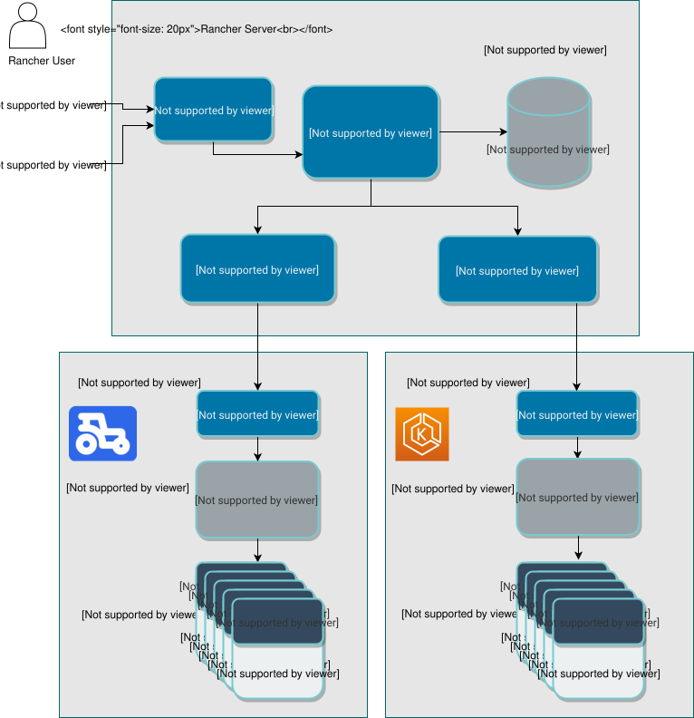

创建 EKS 集群
Amazon EKS 为您的 Kubernetes 集群提供托管控制平面。Amazon EKS 在多个可用区运行 Kubernetes 控制平面实例，以确保高可用性。Rancher 提供直观的用户界面，用于管理和部署您在 Amazon EKS 中运行的 Kubernetes 集群。通过本指南，您将使用 Rancher 快速轻松地在您的 AWS 账户中启动 Amazon EKS Kubernetes 集群。有关 Amazon EKS 的更多信息，请参见此 文档。
在 Amazon Web Services 中的先决条件
|
部署到 Amazon AWS 将产生费用。有关更多信息，请参阅 EKS 定价页面。 |
要在 EKS 上设置集群，您需要设置一个 Amazon VPC（虚拟私有云）。您还需要确保您用于创建 EKS 集群的账户具有适当的 权限。有关详细信息，请参阅 Amazon EKS 先决条件 的官方指南。
Amazon VPC
启动 EKS 集群需要一个 Amazon VPC。VPC 使您能够在您定义的虚拟网络中启动 AWS 资源。您可以自己设置一个，并在 Rancher 中创建集群时提供它。如果您在创建时未提供，Rancher 将会创建一个。有关更多信息，请参阅 教程：为您的 Amazon EKS 集群创建具有公共和私有子网的 VPC。
IAM策略
Rancher 需要访问您的 AWS 账户，以便在 Amazon EKS 中配置和管理您的 Kubernetes 集群。您需要在 AWS 账户中为 Rancher 创建一个用户，并定义该用户可以访问的内容。
|
重要说明：
定期轮换您的访问密钥和秘密密钥是很重要的。有关更多信息，请参见 文档。 |
有关 EKS 的 IAM 策略的详细信息，请参阅官方 Amazon EKS IAM 策略文档, 角色, 和权限。
创建 EKS 集群
使用 Rancher 设置和配置您的 Kubernetes 集群。
-
单击 ☰ > 集群管理。
-
在 集群 页面，点击 创建。
-
选择 Amazon EKS。
-
输入*集群名称*。
-
使用 成员角色 配置集群的用户授权。点击 添加成员 以添加可以访问集群的用户。使用 角色 下拉菜单为每个用户设置权限。
-
填写表单的其余部分。如需帮助，请参阅 配置参考。
-
单击*创建*。
结果：
您的集群已创建并被分配为*正在配置*状态。Rancher 正在启动您的集群。
在集群状态更新为*活动*后，您可以访问您的集群。
*活动*集群被分配两个项目：
-
Default，包含`default`名称空间 -
System，包含cattle-system、traefik、kube-public和kube-system名称空间
EKS 集群配置参考
有关 EKS 集群配置选项的完整列表，请参见 此页面。
体系结构
下图展示了 Rancher 2.x 的高层架构。该图描绘了一个 Rancher 服务器安装，管理两个 Kubernetes 集群：一个由 RKE 创建，另一个由 EKS 创建。

AWS 服务事件
要查找有关任何 AWS 服务事件的信息，请参见 此页面。
教程
此 教程 在 AWS 开源博客上将指导您如何使用 Rancher 设置 EKS 集群，部署一个可公开访问的 APP 以测试集群，并部署一个示例项目以使用 Grafana 和 InfluxDB 等其他开源软件组合跟踪实时地理空间数据。
最低 EKS 权限
这些是访问 Rancher 的 EKS 驱动程序的全部功能所需的最低权限集。这些权限允许 Rancher 在用户的名义下创建服务角色和虚拟私有云 (VPC) 资源（如有必要）。
|
在 EKS v1.23 及以上版本中，您必须使用外部驱动程序来支持 EBS-backed 卷。您需要 特定权限 来启用此附加产品。 |
| 资源 | 说明 |
|---|---|
EBS CSI 驱动程序附加产品 |
提供允许 Kubernetes 与 EBS 交互并配置集群以启用附加产品的权限（EKS v1.23 及以上版本所需）。Rancher 可以使用以下 EBS CSI 驱动程序附加产品权限 安装附加产品。 |
资源目标使用 *，因为许多创建的资源的 ARN 在 Rancher 中创建 EKS 集群之前无法知道。
{
"Version": "2012-10-17",
"Statement": [
{
"Sid": "EC2Permissions",
"Effect": "Allow",
"Action": [
"ec2:AuthorizeSecurityGroupEgress",
"ec2:AuthorizeSecurityGroupIngress",
"ec2:CreateKeyPair",
"ec2:CreateLaunchTemplate",
"ec2:CreateLaunchTemplateVersion",
"ec2:CreateSecurityGroup",
"ec2:CreateTags",
"ec2:DeleteKeyPair",
"ec2:DeleteLaunchTemplate",
"ec2:DeleteLaunchTemplateVersions",
"ec2:DeleteSecurityGroup",
"ec2:DeleteTags",
"ec2:DescribeAccountAttributes",
"ec2:DescribeAvailabilityZones",
"ec2:DescribeImages",
"ec2:DescribeInternetGateways",
"ec2:DescribeInstanceTypes",
"ec2:DescribeKeyPairs",
"ec2:DescribeLaunchTemplateVersions",
"ec2:DescribeLaunchTemplates",
"ec2:DescribeRegions",
"ec2:DescribeRouteTables",
"ec2:DescribeSecurityGroups",
"ec2:DescribeSubnets",
"ec2:DescribeTags",
"ec2:DescribeVpcs",
"ec2:RevokeSecurityGroupEgress",
"ec2:RevokeSecurityGroupIngress",
"ec2:RunInstances"
],
"Resource": "*"
},
{
"Sid": "CloudFormationPermissions",
"Effect": "Allow",
"Action": [
"cloudformation:CreateStack",
"cloudformation:CreateStackSet",
"cloudformation:DeleteStack",
"cloudformation:DescribeStackResource",
"cloudformation:DescribeStackResources",
"cloudformation:DescribeStacks",
"cloudformation:ListStackResources",
"cloudformation:ListStacks"
],
"Resource": "*"
},
{
"Sid": "IAMPermissions",
"Effect": "Allow",
"Action": [
"iam:AddRoleToInstanceProfile",
"iam:AttachRolePolicy",
"iam:CreateInstanceProfile",
"iam:CreateRole",
"iam:CreateServiceLinkedRole",
"iam:DeleteInstanceProfile",
"iam:DeleteRole",
"iam:DetachRolePolicy",
"iam:GetInstanceProfile",
"iam:GetRole",
"iam:ListAttachedRolePolicies",
"iam:ListInstanceProfiles",
"iam:ListInstanceProfilesForRole",
"iam:ListRoles",
"iam:ListRoleTags",
"iam:PassRole",
"iam:RemoveRoleFromInstanceProfile",
"iam:TagRole"
],
"Resource": "*"
},
{
"Sid": "KMSPermissions",
"Effect": "Allow",
"Action": "kms:ListKeys",
"Resource": "*"
},
{
"Sid": "EKSPermissions",
"Effect": "Allow",
"Action": [
"eks:CreateCluster",
"eks:CreateFargateProfile",
"eks:CreateNodegroup",
"eks:DeleteCluster",
"eks:DeleteFargateProfile",
"eks:DeleteNodegroup",
"eks:DescribeAddon",
"eks:DescribeCluster",
"eks:DescribeFargateProfile",
"eks:DescribeNodegroup",
"eks:DescribeUpdate",
"eks:ListClusters",
"eks:ListFargateProfiles",
"eks:ListNodegroups",
"eks:ListTagsForResource",
"eks:ListUpdates",
"eks:TagResource",
"eks:UntagResource",
"eks:UpdateClusterConfig",
"eks:UpdateClusterVersion",
"eks:UpdateNodegroupConfig",
"eks:UpdateNodegroupVersion"
],
"Resource": "*"
},
{
"Sid": "VPCPermissions",
"Effect": "Allow",
"Action": [
"ec2:AssociateRouteTable",
"ec2:AttachInternetGateway",
"ec2:CreateInternetGateway",
"ec2:CreateRoute",
"ec2:CreateRouteTable",
"ec2:CreateSecurityGroup",
"ec2:CreateSubnet",
"ec2:CreateVpc",
"ec2:DeleteInternetGateway",
"ec2:DeleteRoute",
"ec2:DeleteRouteTable",
"ec2:DeleteSubnet",
"ec2:DeleteTags",
"ec2:DeleteVpc",
"ec2:DescribeVpcs",
"ec2:DetachInternetGateway",
"ec2:DisassociateRouteTable",
"ec2:ModifySubnetAttribute",
"ec2:ModifyVpcAttribute",
"ec2:ReplaceRoute"
],
"Resource": "*"
}
]
}当您创建 EKS 集群时，Rancher 会创建一个具有以下信任策略的服务角色：
{
"Version": "2012-10-17",
"Statement": [
{
"Action": "sts:AssumeRole",
"Principal": {
"Service": "eks.amazonaws.com"
},
"Effect": "Allow",
"Sid": ""
}
]
}此角色还附加了两个角色策略，具有以下策略的 ARN：
arn:aws:iam::aws:policy/AmazonEKSClusterPolicy
arn:aws:iam::aws:policy/AmazonEKSServicePolicyEBS CSI 驱动程序附加产品权限
以下是安装 Amazon EBS CSI 驱动程序附加产品所需的权限。
{
"Version": "2012-10-17",
"Statement": [
{
"Effect": "Allow",
"Action": [
"eks:AssociateIdentityProviderConfig",
"eks:CreateAddon",
"eks:DeleteAddon",
"eks:DescribeAddonConfiguration",
"eks:DescribeAddonVersions",
"eks:DescribeIdentityProviderConfig",
"eks:ListAddons",
"eks:ListIdentityProviderConfigs",
"eks:UpdateAddon",
"iam:CreateOpenIDConnectProvider",
"iam:ListOpenIDConnectProviders",
"sts:AssumeRoleWithWebIdentity"
],
"Resource": "*"
}
]
}IPv6 双栈网络权限
以下是从 Rancher 配置 IPv6 EKS 集群所需的额外权限。
|
这些权限仅在 Rancher 创建 新的 IPv6 集群时才是必要的。在创建新集群期间，Rancher 需要这些权限来生成双栈 VPC、创建 IAM OIDC 提供程序，并将内联策略 ( 如果您正在注册（导入）一个已经配置了 IPv6 的现有 EKS 集群，则 不需要 这些额外权限。 |
{
"Version": "2012-10-17",
"Statement": [
{
"Effect": "Allow",
"Action": [
"ec2:AssignIpv6Addresses",
"ec2:UnassignIpv6Addresses",
"ec2:AssignPrivateIpAddresses",
"ec2:UnassignPrivateIpAddresses",
"ec2:AssociateVpcCidrBlock",
"ec2:DisassociateVpcCidrBlock",
"iam:PutRolePolicy",
"iam:CreateOpenIDConnectProvider",
"iam:ListOpenIDConnectProviders",
"eks:AssociateIdentityProviderConfig",
"eks:DescribeIdentityProviderConfig",
"eks:ListIdentityProviderConfigs",
"sts:AssumeRoleWithWebIdentity"
],
"Resource": "*"
}
]
}查错
如果您的更改被覆盖，可能是由于集群数据与 EKS 同步的方式。在五分钟内，不应从其他来源（例如 EKS 控制台）对集群进行更改，也不应在 Rancher 中进行更改。有关此如何工作以及如何配置刷新间隔的信息，请参见 Syncing.
如果在尝试修改或注册集群时返回未授权错误，并且集群不是由您的凭据所属的角色或用户创建的，请参见 Security and Compliance.
有关您的 Amazon EKS Kubernetes 集群的任何问题或故障排除详细信息，请参见此 文档。
以编程方式创建 EKS 集群
通过 Rancher 以编程方式部署 EKS 集群的最常见方式是使用 Rancher2 Terraform 提供程序。使用 Terraform 创建集群的文档在 这里。